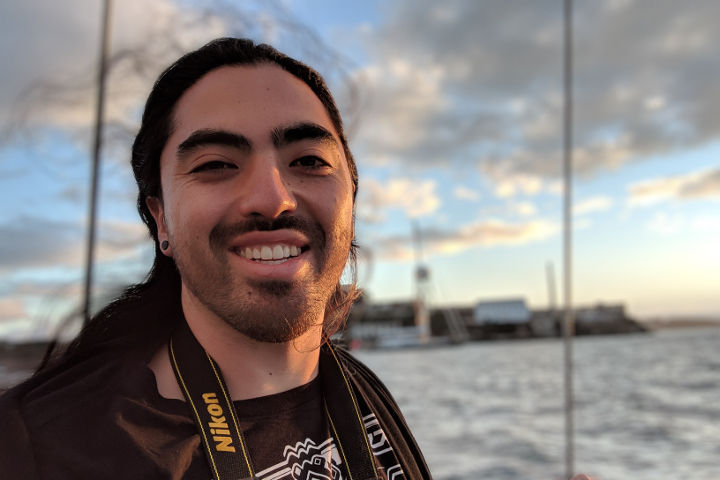

Hi, I'm Spencer,
I'm passionate, dedicated, and love to get things done. My approach to any project emphasizes quality, collaboration, and delivering meaningful results.
I'm currently based in San Francisco, CA with Epsilon Agency, managing the deployment of email marketing campaigns for the Google Assistant, Google News Initiative, and Actions on Google.
Sailing the bay, San Francisco, CA
Out in the world
In my free time, you’ll find me out surfing, playing my guitar, or doodling in my sketchbook. I believe in constant improvement, and enjoy using my free time to create, learn, and grow. I love taking my camera out, honing my skills as a photographer as I capture shots of the city, nature, and whatever else catches my eye.
Feel free to take a look at my photo gallery if you like.
What else? I take my coffee black. I love to cook. I've worked as a cheesemaker and zip line tour guide. Eventually, I’d like to travel to all 7 continents, and one day all the way up to the moon (one can dream right?).

The "Sunset District" Ocean Beach, San Francisco. Photo by Alexa Francis
How did I get here?
Before coming to San Francisco, I spent 3 years in Santa Cruz, CA, working with a wonderful nonprofit- The Volunteer Center of Santa Cruz County. I discovered the Volunteer Center through a position with Americorps, a national service program, often colloquially referred to as "the domestic Peace Corps". As an Americorps member, I focused on building organizational capacity by recruiting and engaging community volunteers in meaningful projects around the county.
After completing my term of service wth Americorps, I accepted a position to stay with the Volunteer Center, and expand my work into event coordination, fundraising, and development. I had the privilege to partner with local government officials, business leaders, and dozens of talented community members to tackle a variety of social, environmental, and economic issues.
All in all, my events raised over $1,000,000 for more than 150 local nonprofit organizations.

Serving the community with my team (top), County Supervisor John Leopold (bottom left), and Congressman Sam Farr (bottom right).
''Learn by Doing''
I graduated from Cal Poly San Luis Obispo in 2014 with my B.S. in Kinesiology. As an undergrad, I served on the executive board of multiple student organizations including the Student Philanthropy Council and Interfraternity Council. Through my extracurricular involvement, I was able to act as a leader for student development, philanthropy, and volunteer efforts.
Although my career took me a in different direction than my coursework, I enjoy using my understanding of exercise and diet to lead a healthy life, and applying the "Learn by Doing" motto to new challenges that come my way.

Graduation Day- Considering how much time I spent at the beach, the board shorts just seemed right